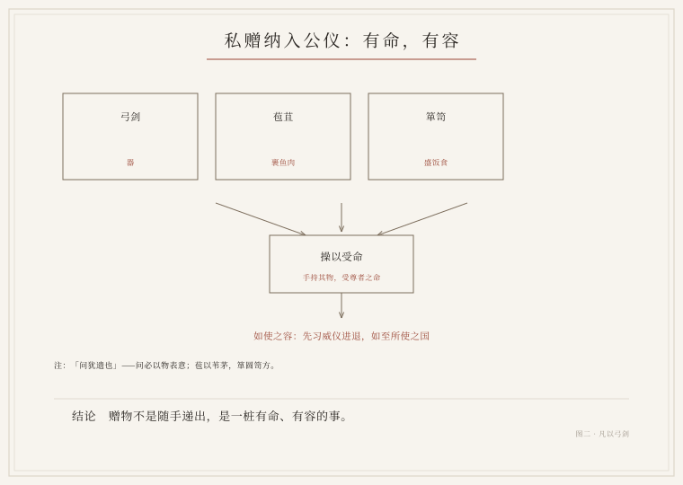

曲礼上 · 一·九十六 · 第 94 课
凡以弓剑、苞苴、箪笥赠人，都须手执其物以受尊者之命，仪容要像使者出行。注一句「问犹遗也」：问不是问事，是因问而赠物。
说什么事：凡以弓剑、苞苴、箪笥问人者，操以受命，如使之容。
落在哪一层：仪。所重在「受命」与「容」。
为何编在此位：上数节皆言一物之授受，此节总收诸物，归于「如使之容」，是献遗一段的结句。
【经】凡以弓劍、苞苴、簞笥問人者，操以受命，如使之容。
【注】問猶遺也。苞苴，裹魚肉，或以葦，或以茅。簞笥，盛飯食者，圜曰簞，方曰笥。
问 注「问犹遗也」。疏「问谓因问有物遗之也」；又有二义：「或自有事问人，或谓闻彼有事而问之」，问必以物表意。
苞苴 注「裹鱼肉，或以苇，或以茅」。疏引《诗》「野有死麕，白茅苞之」、《内则》「编萑以苴之」、《既夕礼》「苇苞长三尺」。
箪笥 注「盛饭食者，圜曰箪，方曰笥」。疏「俱是竹器，亦以苇为之」。
操以受命 疏「言使者操持此上诸物以进，受尊者之命」。
如使之容 疏「如臣为君聘使，受君命，先习其威仪进退，令如其至所使之国时之仪容」。
凡以弓剑、苞苴、箪笥赠人，都手持其物以受尊者之命，仪容要像出使之人。
一节总收：所赠之物无论贵贱，都要「操以受命」；所执之容，要像使者将行。礼在这里把送礼抬到「奉命而行」的高度——赠物不是随手递出，是一桩有命、有容的事。
第一层 问即是遗 古之「问」常带物。问其事，表其意，物是意的凭据。
第二层 苞与笥 苞裹鱼肉，笥盛饭食；或苇或茅，圜箪方笥。器随物，亦随材。
第三层 操以受命 手持其物而受命，是把赠物纳入「命」的框架：物的去处由尊者定，己只是执物之人。
第四层 如使之容 疏说先习威仪进退，如至所使之国。赠物之人要预演受者之邦的仪容——礼在此处想到了极远。
与今日何干 代公司送礼，先受命、再备物、再整仪容；递出时不像随手，像办事。
| 左 | 右 |
|---|---|
| 问 | 因问而遗物，非问事 |
| 苞苴 | 裹鱼肉，或以苇，或以茅 |
| 箪笥 | 盛饭食，圜曰箪，方曰笥 |
| 操以受命 | 手持其物，受尊者之命 |
| 如使之容 | 威仪进退如出使之仪 |
| 赠物之重 | 纳入「命」，不由己意 |
画案上三物并列：一束以茅草包裹的鱼肉（草绳十字缠结）、一只圆箪（口沿圆、有盖）、一只方笥（棱角分明、盖上有榫）。三物之后横置一张弓与一柄短剑，皆未出鞘。不画人、不写文字。赭色只在草绳与笥盖榫处。
